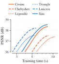
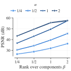
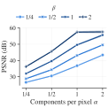
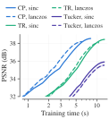
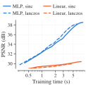

Ablations¶
FUTON's four design choices, varied one at a time on the image task (the 24 Kodak images at 768 × 512, 2000 epochs on 10 % of the pixels per step, learning rate 3e-2), plus one supplementary study on a radiance field. Unless stated, the default model is the benchmark's: K = (H/2, W/2) components per axis, 384 × 256 for a landscape image, CP rank 224, a one-layer MLP decoder, 194,435 parameters. The configs are in configs/ablation-futon/, and every table and plot here is in results/ablation/. The times are the sweeps' own, on A100s that ran other jobs beside them, so they compare the variants with each other rather than with the benchmark tables.
Basis¶
All six families at the default size. The number of parameters does not depend on the basis, so the columns are what each family costs and what it buys.
| Basis | Orthogonal | Support | Smoothness | Training time (s) ↓ | PSNR (dB) ↑ |
|---|---|---|---|---|---|
| Cosine | yes | global | \(C^\infty\) | 8.4 | 38.36 ± 0.04 |
| Chebyshev | weighted | global | \(C^\infty\) | 8.6 | 37.52 ± 0.05 |
| Legendre | yes | global | \(C^\infty\) | 10.8 | 37.42 ± 0.05 |
| Triangle | no | compact | \(C^0\) | 5.4 | 37.54 ± 0.05 |
| Lanczos | no | compact | \(C^1\) | 5.7 | 38.22 ± 0.03 |
| Sinc | no | global | \(C^\infty\) | 8.3 | 38.54 ± 0.04 |

The families fall into two groups a decibel apart, and that is the whole spread: sinc, cosine and Lanczos at 38.2 to 38.5 dB, triangle and the two polynomial families at 37.4 to 37.5. Training time varies 2×. The cosine and sinc bases are tabulated on the pixel grid (grid_size = (H, W)); the Chebyshev polynomials are one cosine over the degrees and the Legendre ones a fixed combination of them, so the global families cost about the same; the local ones are the cheapest because a coordinate touches two (triangle) or six (Lanczos-3) functions per axis, which one fused kernel evaluates and the sparse product kernels exploit. Lanczos is the sweet spot, 0.3 dB behind sinc in 70 % of its time, and triangle, the cheapest, pays a full decibel for its \(C^0\) kink.
Components against rank¶
The two sizes of a FUTON, the number of components per axis and the CP rank, scaled with the image: K = (αH, αW) and R = β min(K), for α and β in {1/8, 1/4, 1/2, 1, 2}, 25 models per basis (components_rank.yaml). The sinc basis is shown; the Lanczos results are in results/ablation/ and match. Because K and R both set the size, the grid spans 1,379 to 9,445,379 parameters, from a hundredth of the benchmark's budget to 48 times it, and its lower right holds more parameters than the image has values:
| α \ β | 1/8 | 1/4 | 1/2 | 1 | 2 |
|---|---|---|---|---|---|
| 1/8 | 1.4k | 2.9k | 6.3k | 14.6k | 37.4k |
| 1/4 | 5.4k | 11.4k | 24.8k | 57.9k | 148k |
| 1/2 | 21.6k | 45.3k | 98.8k | 230k | 592k |
| 1 | 86.3k | 181k | 394k | 920k | 2.36M |
| 2 | 345k | 722k | 1.57M | 3.67M | 9.45M |
Parameters per cell, \(R^2 + (h + w + 4) R + 3\) for \(K = (h, w)\); the benchmark's model sits in the third row between β = 1/2 and β = 1, at R = 224.


Mean PSNR (dB) over the 24 images for the sinc basis:
| α \ β | 1/8 | 1/4 | 1/2 | 1 | 2 |
|---|---|---|---|---|---|
| 1/8 | 22.28 | 24.00 | 25.55 | 27.32 | 29.68 |
| 1/4 | 24.65 | 26.59 | 28.83 | 31.98 | 36.25 |
| 1/2 | 27.60 | 30.53 | 34.36 | 39.62 | 45.60 |
| 1 | 31.72 | 36.76 | 43.12 | 49.60 | 57.44 |
| 2 | 36.81 | 43.37 | 49.60 | 55.64 | 57.59 |
Rank is the lever that keeps paying: at every α, each doubling of β raises the PSNR, by about 2 dB on the coarsest grid and by 5 to 8 dB on the finest, until the lower right, with more parameters than the image has values, fits it to within the 8-bit quantization step (58.9 dB). Components saturate at the sampling resolution. The cells (α, β) and (2α, β/2) share a rank, and along such a chain doubling K is worth 1 to 4 dB up to K = (H, W), more at higher ranks, and nothing beyond it: from one to two components per pixel the gain is at most 0.3 dB, and at R = 1024 a loss of 1.8 dB, for nearly twice the parameters. That is why the benchmark spends its budget on R at K = (H/2, W/2): near 200k parameters the cell (1/2, 1) reaches 39.6 dB where (1, 1/4) stays at 36.8 and (2, 1/8) at 36.8 for 345k, and the benchmark's R = 224 lands at 38.5 dB between the two middle cells of its row. The Lanczos grid is within 0.6 dB of every sinc cell except the lower right, where the local basis is a decibel ahead.
Combiner¶
Tensor-ring and Tucker combiners against the CP one, at the default K, for both bases. A ring of rank \(r\) has the size of a CP combiner of rank \(r^2\); rank 15 (195,528 parameters) is the closest match to the CP model (194,435). Tucker takes a rank per axis in proportion to its components, \(R_c = \gamma K_c\) with \(\gamma = 0.162\), the closest match in size: on a 512 × 768 image it projects the axes to 41 and 62 directions and contracts them with a \(41 \times 62 \times 62\) core that feeds a 62-wide decoder, 196,003 parameters.
| Combiner | #Params (k) | FUTON-sinc Training time (s) ↓ | FUTON-sinc PSNR (dB) ↑ | FUTON-lanczos Training time (s) ↓ | FUTON-lanczos PSNR (dB) ↑ |
|---|---|---|---|---|---|
| CP | 194.4 | 8.2 | 38.54 ± 0.09 | 6.1 | 38.20 ± 0.06 |
| TR | 195.5 | 13.0 | 38.44 ± 0.05 | 10.8 | 38.08 ± 0.04 |
| Tucker | 196.0 | 12.9 | 35.90 ± 0.10 | 13.0 | 35.54 ± 0.10 |

CP wins on both counts: by 0.1 dB and 1.6 to 1.8× in training time over the ring, whose \(r \times r\) matrices per point cost more to contract than CP's \(R\) products and whose output is only \(r^2 = 225\) wide, which the decoder then has to close; and by 2.6 to 2.7 dB and 1.6 to 2.1× over Tucker, whose core holds 158k of its parameters while each axis passes through only 41 or 62 directions against CP's 224, and whose core contraction makes it as slow as the ring or slower.
Decoder¶
The paper's model has a linear decoder, which makes FUTON exactly a rank-\(R\) CP model of the signal; the benchmarks use a one-layer MLP. The two are compared at equal size: replacing the MLP by a linear map frees 50,400 parameters, which the combiner spends on raising the rank from 224 to 302, 194,189 parameters against the benchmark's 194,435.
| Decoder | #Params (k) | FUTON-sinc Training time (s) ↓ | FUTON-sinc PSNR (dB) ↑ | FUTON-lanczos Training time (s) ↓ | FUTON-lanczos PSNR (dB) ↑ |
|---|---|---|---|---|---|
| MLP, 1 hidden layer (R = 224) | 194.4 | 8.2 | 38.54 ± 0.16 | 6.2 | 38.20 ± 0.15 |
| Linear (R = 302) | 194.2 | 7.6 | 30.40 ± 0.16 | 4.7 | 29.95 ± 0.15 |

A natural image is far from a low-rank tensor in a smooth basis: at equal size the linear model stops at 30.4 dB, 8 dB below the MLP. It trains faster, its steps being cheaper, but it is flat from the first seconds where the MLP keeps climbing. The MLP decoder is therefore the default, and the linear decoder remains the model to reason about.
Radiance fields¶
The components question, asked once of a radiance field (lego, components_nerf.yaml): twice the components, K = 256, at the rank that pays for them, R = 78 (73,733 parameters), against the benchmark's K = 128 and R = 128 (74,131). The benchmark's split wins by 0.8 dB, 30.91 against 30.12 dB on the test views, with the same training time: on a radiance field as on an image, the rank is where the budget belongs once the grid resolves the signal.